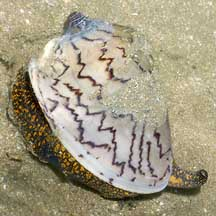
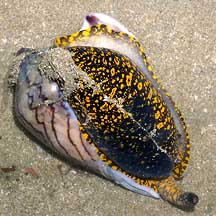
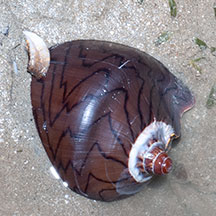
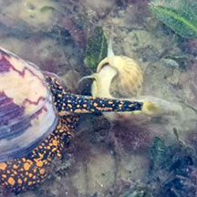
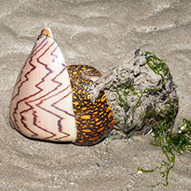
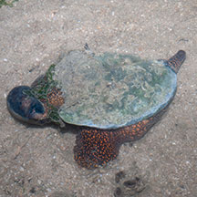

|
|
| shelled snails text index | photo index |
| Phylum Mollusca > Class Gastropoda > Family Volutidae |
| Noble
volute Cymbiola nobilis Family Volutidae updated Sep 2020
Where seen? This large, beautifully marked snail is sometimes encountered on sandy areas near seagrasses and coral rubble on some of our shores. It is more commonly seen moving above the surface at night, and is usually buried during the day. According to the Singapore Red Data Book, this beautiful snail is restricted to our part of the world, in particular, Singapore and Peninsular Malaysia. Empty shells of dead noble volutes are quickly taken over by large hermit crabs. Features: 12-20cm. Shell thick heavy, conical. Shell orange, yellow or beige with red or brown zig-zag patterns. Sometimes all black. A wide variety of patterns can be seen, although in some, the pattern may be obscured by encrusting lifeforms. No operculum. Body large fleshy, black with bright orange or yellow spots. It has a long siphon that sticks out above the sand when the animal is buried. |
 Chek Jawa, Jun 05 |
 Underside, no operculum. |
 Burrowing with siphon sticking out. Changi, Jun 13 |
| What does it eat? This predator eats molluscs seeking out buried prey with its siphon and encloses the prey in its huge foot then waits. When the exhausted bivalve opens up to breathe (which can take several days!), the snail sticks its proboscis in and rasps the flesh of its prey with its radula. While it may hunt from the surface, it often burrows to eat their prey under the sand. |

 From video of whelk leaping to escape. Chek Jawa, Dec 25 Photo shared by Che Cheng Neo on facebook. |
 Attempting to eat a Fan clam? Changi, Jun 13 |
A clam using its foot to leap away
from a Noble volute. |
| Baby nobles: Mama noble volutes lay large egg capsules. Each capsule about 10cm long, oval with angular bumps, translucent white to beige or yellowish. The capsules are usually stacked up to form a cylindrical, generally oval shape and the entire assembly attached to a hard, embedded object such as coral rubble. Each capsule contains many eggs, but only one or a few develop, the survivor having eaten the others. The eggs hatch and undergo metamorphosis within the egg capsules, emerging as tiny crawling snails. Because there is no free-swimming larval stage the snail has a restricted range and local populations can be wiped out by over-collection. |
 A much smaller one riding on the back of a bigger one. Prelude to mating? Pulau Sekudu, Aug 13 |
 Laying eggs Pulau Semakau, Mar 07 |

| Human uses: Called 'kilah'
in Malay, the Noble volute is edible. It is also 'often collected for
its attractive shell. Status and threats: The Noble volute is listed as 'Vulnerable' on the Red List of threatened animals of Singapore due to habitat loss. It was previously abundant in Singapore but is now considered vulnerable due to habitat degradation and overcollection for food and for its attractive shell. Like other creatures of the intertidal zone, they are affected by human activities such as reclamation and pollution. Over-collection can also have an impact on local populations. |
| Noble volutes on Singapore shores |
On wildsingapore
flickr
|
| Other sightings on Singapore shores |
|
Links
References
|